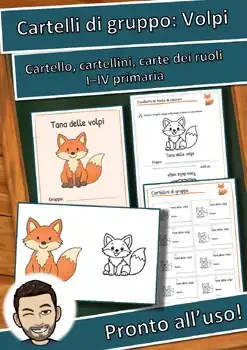
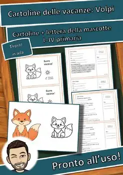
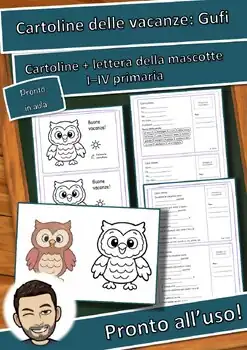
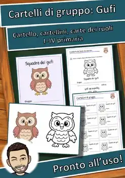
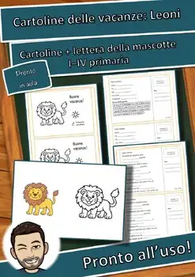
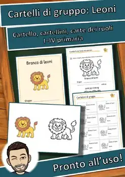
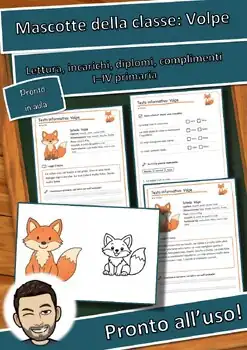
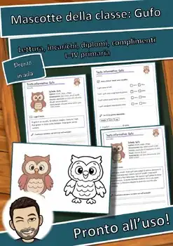
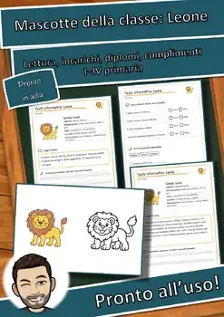

Cartelli di gruppo Volpe: mascotte della classe, carte dei ruoli | Italiano
GRATISVedi su TpT
Cartelli di gruppo, carte dei ruoli e un dato sull'animale per la mascotte di classe Volpe: con Le mascotte della classe il lavoro di gruppo diventa semplice e vivace.
Contenuto (12 pagine):
- Copertina e note per l'insegnante con la preparazione dettagliata
- Cartello da parete a colori
- Cavalletto da tavolo da colorare
- 8 cartellini di gruppo per pagina
- 4 carte dei ruoli adatte all'animale
- Regole del gruppo con bilancio settimanale
- Dato sull'animale da leggere ad alta voce con mini quiz
Dalla I alla IV primaria. Gratis.
Testi creati con l'aiuto dell'IA e rivisti dall'autore; illustrazioni originali generate con l'IA (nessuna fotografia).
⭐ Did this resource work well in your classroom? Please leave a quick review on TPT – you earn TPT credits for future purchases, and it helps me a lot! Click "Follow" on my store page to be the first to hear about new freebies.
U.S. STANDARDS (alignment):
- ACTFL World-Readiness Standards: Interpretive Communication; ACTFL Cultures (Relating Cultural Practices/Products to Perspectives); ACTFL Connections (Acquiring Information and Diverse Perspectives)
- Frameworks: ACTFL World-Readiness Standards for Learning Languages
- Also supports the state standards of non-CCSS states, e.g. Texas TEKS (Languages Other Than English, §114); Florida World Languages Standards; Virginia World Language SOL; Indiana World Language Standards; Oklahoma World Languages Standards; Georgia GSE Modern Languages; Texas TEKS (Science, §112); Florida NGSSS (Science); Virginia Science SOL; Indiana Academic Standards for Science; Oklahoma Academic Standards for Science; South Carolina Academic Standards for Science; Georgia GSE Science; Arizona Science Standards; Alabama Course of Study: Science; Utah SEEd Standards – and the CCSS-based standards of all other U.S. states (please check the exact local code).
TemaScienze e salute
ClassiGrades 1–4
Tipo di materialeMateriale
Pagine12
FormatoPDF
Materiali simili

Cartoline delle vacanze Volpe: mascotte della classe, 3 livelli | Italiano

Cartoline delle vacanze Gufo: mascotte della classe, 3 livelli | Italiano

Cartelli di gruppo Gufo: mascotte della classe, carte dei ruoli | Italiano

Cartoline delle vacanze Leone: mascotte della classe, 3 livelli | Italiano

Cartelli di gruppo Leone: mascotte della classe, carte dei ruoli | Italiano

Pacchetto mascotte Volpe: testo, incarichi, complimenti | Italiano

Pacchetto mascotte Gufo: testo, incarichi, complimenti | Italiano
